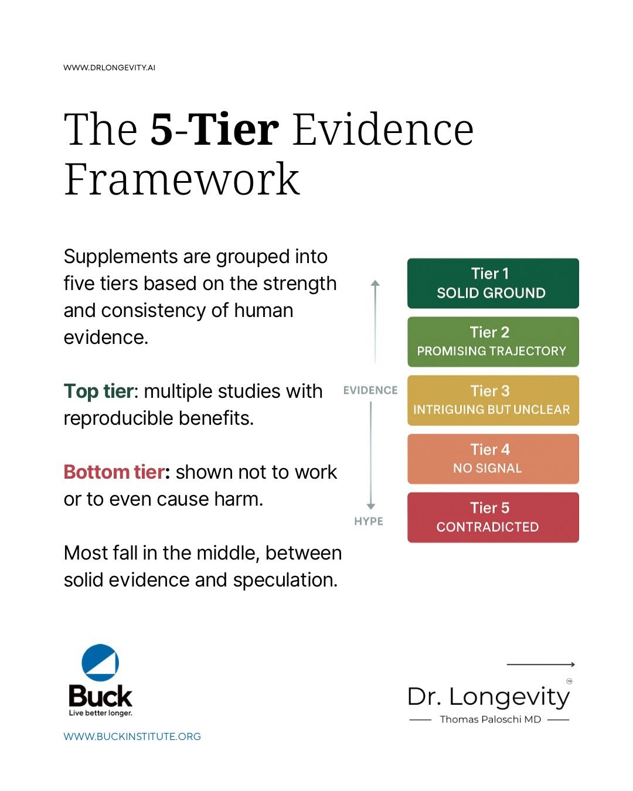
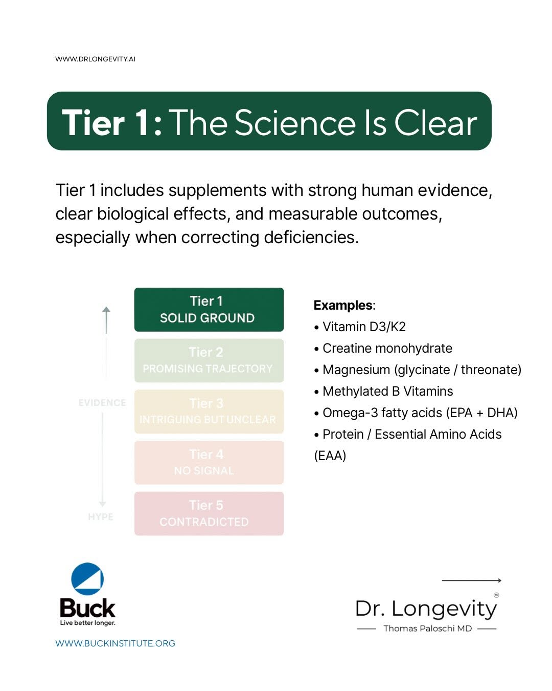
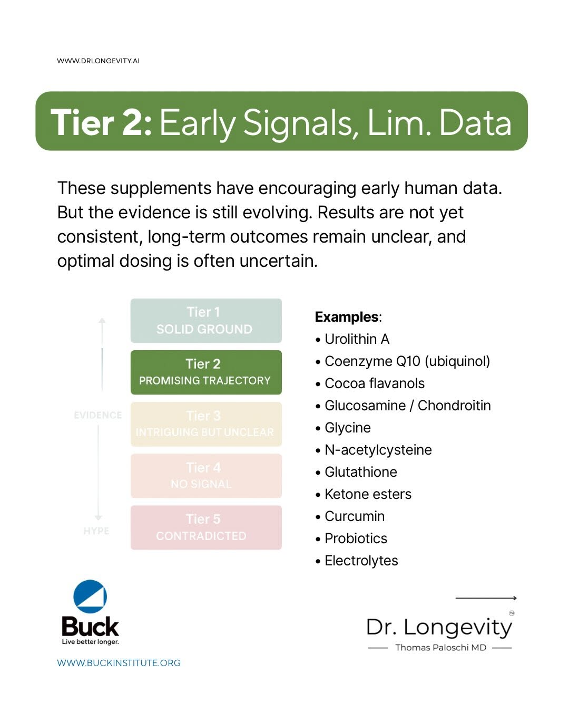
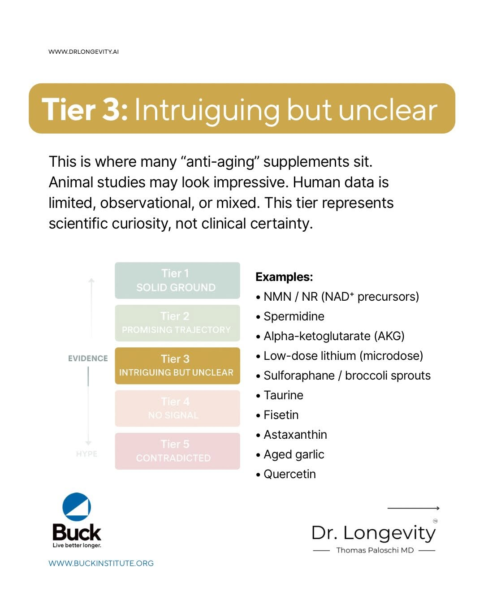

What supplements might actually promote health or longevity in humans?
(Emphasis on might)
A science-based ranking system developed by a respected professor of geroscience at the Buck Institute for Research on Aging.
Louis shares a framework by Buck Institute geroscientist Eric Verdin that ranks supplements from Tier 1 (solid human data) to Tier 5 (evidence says no). Content is in the images only.
What supplements might actually promote health or longevity in humans?
(Emphasis on might)
A science-based ranking system developed by a respected professor of geroscience at the Buck Institute for Research on Aging.
Not all supplements are created equal. And most aren’t backed by what people think.
We built this 5-tier evidence framework to cut through the noise. From Tier 1 (solid human data) to Tier 5 (the science says no).
Swipe through




Louis shares a Substack critique of the glycation-focused supplement GLYLO, which questions the mouse lifespan data, the role of reduced food intake and differences between the research and consumer formulas. His comment is that even if benefits come from inadvertent calorie restriction, that is still significant, as with GLP-1 drugs.

A Buck Institute study in Cell Reports tested a five-ingredient mix (nicotinamide, thiamine, pyridoxamine, alpha lipoic acid, piperine) that lowers glycation. In mice it extended lifespan, reduced appetite and body fat and improved insulin sensitivity.

Louis shares a Cell Reports study in mice where a combination of nicotinamide, alpha-lipoic acid, thiamine, pyridoxamine and piperine (Gly-Low) lowered AGEs, curbed hunger, improved insulin resistance and extended lifespan. It is preclinical.
Louis says he underestimated glycation and AGEs in aging after Pankaj Kapahi's work at the Buck Institute. Kapahi's post explains methylglyoxal as a reactive glycolysis byproduct that drives AGEs and aging, and describes GLYLO, a combination of lipoic acid, nicotinamide, piperine, pyridoxine and thiamine that lowered methylglyoxal and AGEs and extended mouse lifespan even when started late. Louis says Kapahi plans a paper showing it reduces arterial stiffening. Evidence is preclinical and the product is commercial.

Eric Verdin explains mitochondria regulate immune responses and cell fate and that mtDNA mutations accumulate over decades.

Gokhan highlights a mouse study in which restoring youthful VEGF signaling kept blood vessels healthier with age, improving metabolism, muscle, bone and inflammation and extending lifespan by 45%. He speculates about human applications such as walking and daily activity, but the finding is in mice.